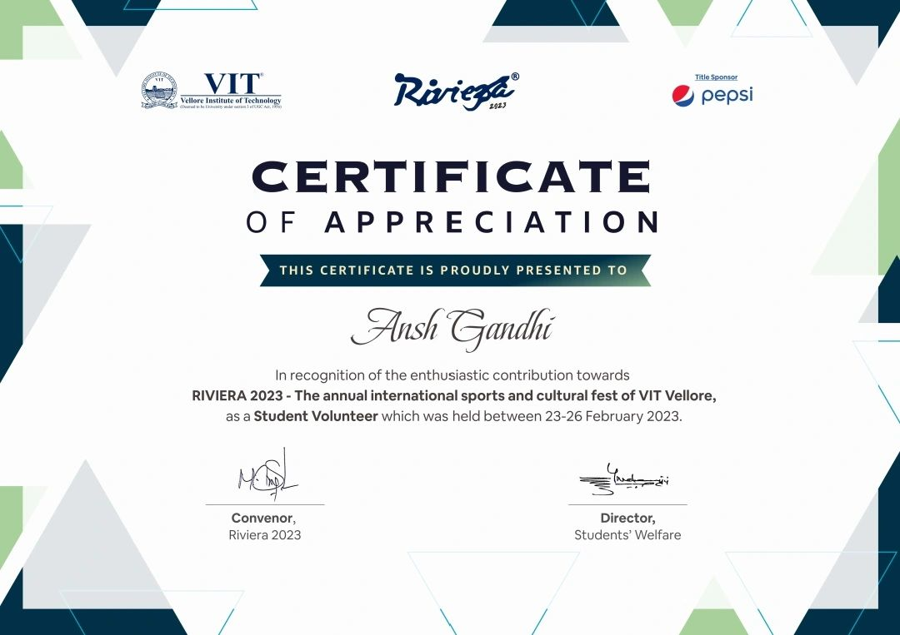

About Me
My name is Ansh Gandhi.I am pursuing a Bachelor of Technology degree in Computer Science at VIT, where I have
learned the basics of Python, C, C++, and Java. I am interested in machine learning and artificial intelligence, and I
am eager to apply my coding and analytical skills to real-world problems and challenges.
I am very inquisitive by nature, which motivates me to learn the core of everything I study or indulge in. I also follow
psychology and look forward to acquiring new skills and knowledge that can enhance my personal and professional
growth.
As a core member of VIT Anchoring Club, I have honed my public speaking and communication skills, winning
several awards in debate and elocution competitions. I enjoy engaging with diverse audiences and delivering captivating
and informative speeches on various topics.
I have worked as an anchor in VIT Vellore, I have anchored 5 events.
I am active in clubs like debate soceity and anchoring club.
I am currently working as marketing intern in ChaiGalli Vellore
Proshow off Stage Volunteer
